Manual de marca
Un laboratorio de 140 años, con imagen de hoy. El nombre, el negocio y la esencia se mantienen: cambia cómo se ve y cómo se cuenta.
Capítulo 01
Dónde está la marca hoy y hacia dónde va.
1.1 · Diagnóstico
Hoy Beautemps se ve antigua y genérica, cuando en realidad es el primer laboratorio del país habilitado para elaborar IFA vegetales.
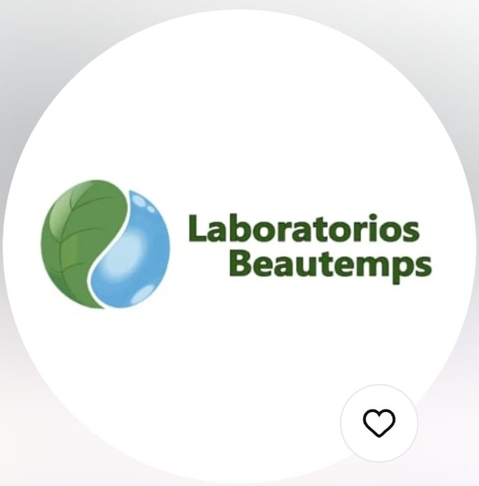
Logo actual
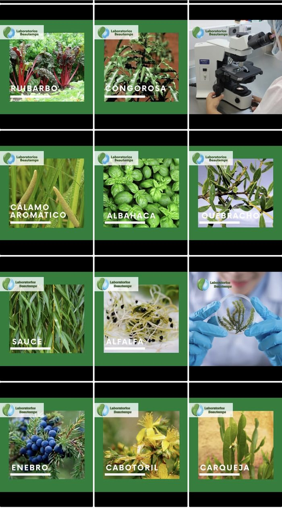
Feed actual
La idea de hoja + gota es correcta, pero los brillos y degradés la hacen ver anticuada. El verde saturado con celeste se lee como "producto natural", no como "laboratorio". En el avatar casi no se lee.
La grilla repite siempre el mismo formato: marco verde, foto de stock y nombre en mayúsculas. Muestra plantas pero no explica qué es una tintura madre, cómo se elabora ni por qué elegir a Beautemps.
1.2 · El norte del cambio
Un proveedor experto en insumos vegetales, con la tradición como respaldo y no como estética.
Cinco atributos en cada pieza
Capítulo 02
Paleta, tipografía y logo.
2.1 · Paleta de colores
El azul petróleo es el color de identidad. La luz la ponen la base crema y los verdes, para que la marca se vea fresca y nunca fría. El ámbar aparece poco: es la esencia.
Color principal
Verdes · el origen vegetal
Neutros y acento · la luz, la precisión y la esencia
Proporción de uso
2.2 · Tipografía
Tres familias, cada una con un rol. La combinación transmite rigor técnico sin perder lo vegetal ni la trayectoria.
Logo · Poppins
beautemps
Bold y Medium. Solo para la marca: el logo y LABORATORIOS.
Principal · Manrope
De la planta, a la esencia.
Títulos, textos, datos y web. Moderna y cálida, muy legible en pantalla y en chico.
Acento · Instrument Serif itálica
Calendula officinalis
Solo para nombres científicos, citas y detalles. Remite a los herbarios, en dosis justas.
2.3 · Logo
El logo de siempre ya tenía la idea: una hoja y una gota. La propuesta toma cada una y la vuelve protagonista. Se presentan los dos caminos completos para elegir uno.
2.3.A · Camino A
La marca en movimiento
Tocá el parlante de cada animación para escucharla con sonido.
"beautemps" se disuelve y la e crece como una hoja. La marca nace de la planta: la materia prima de todo lo que elabora Beautemps.
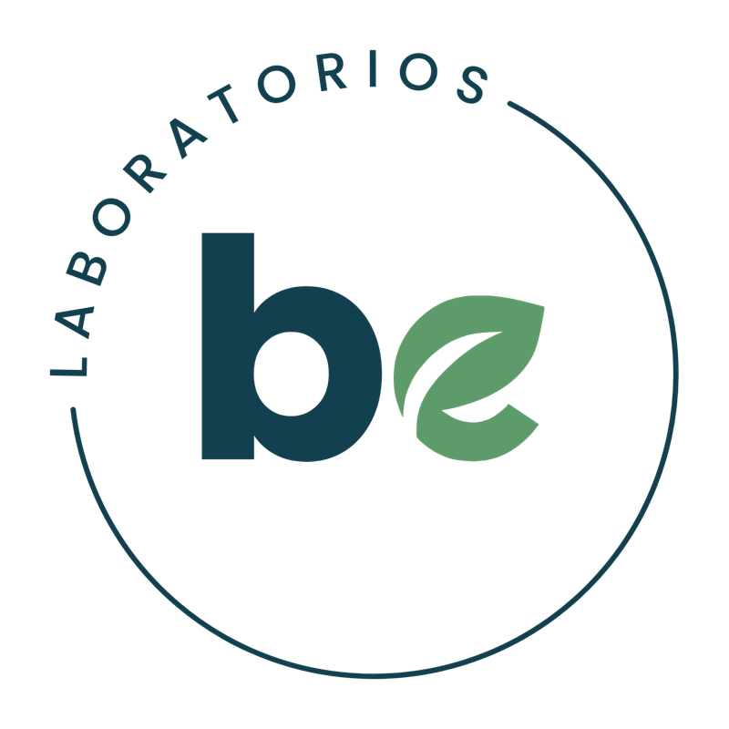
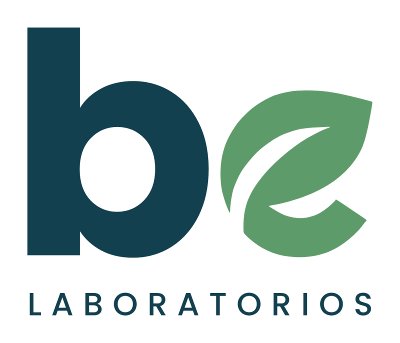
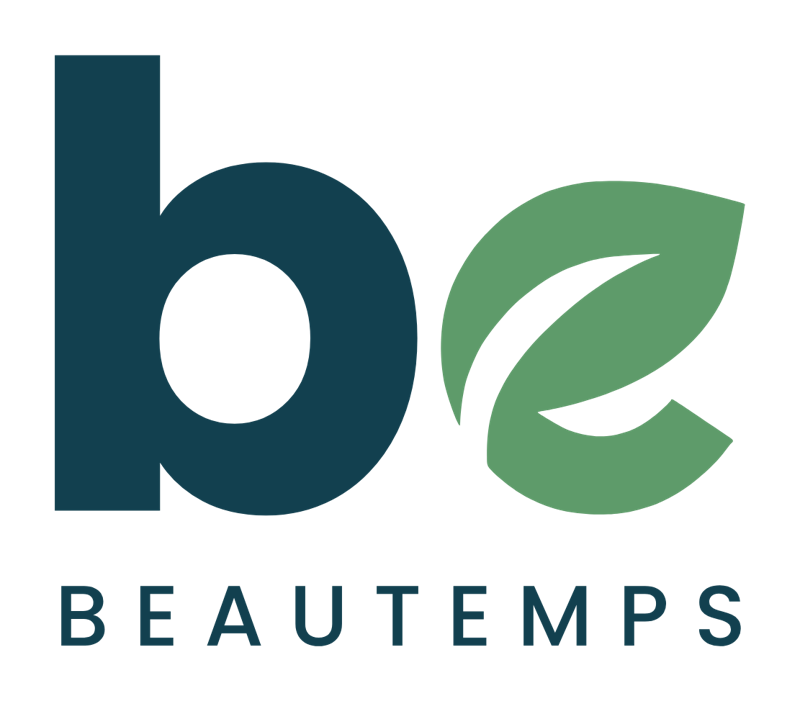
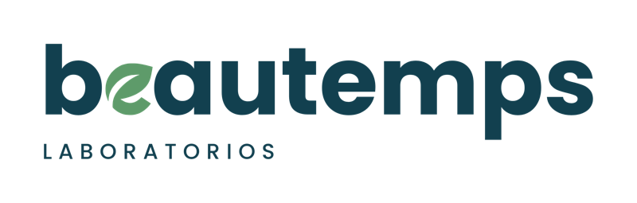
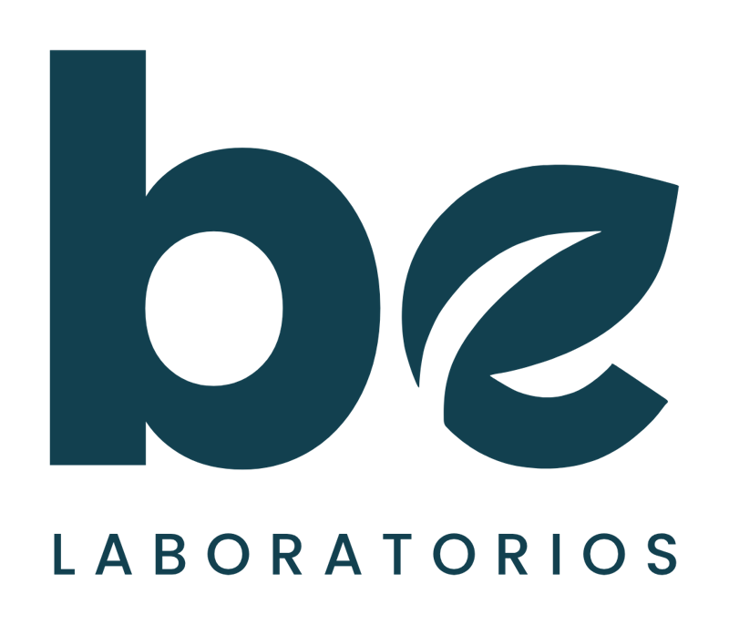
2.3.B · Camino B
La marca en movimiento
Tocá el parlante de cada animación para escucharla con sonido.
La b y la p del nombre se funden en una gota: la tintura madre. La marca nace del producto, de lo que Beautemps elabora.
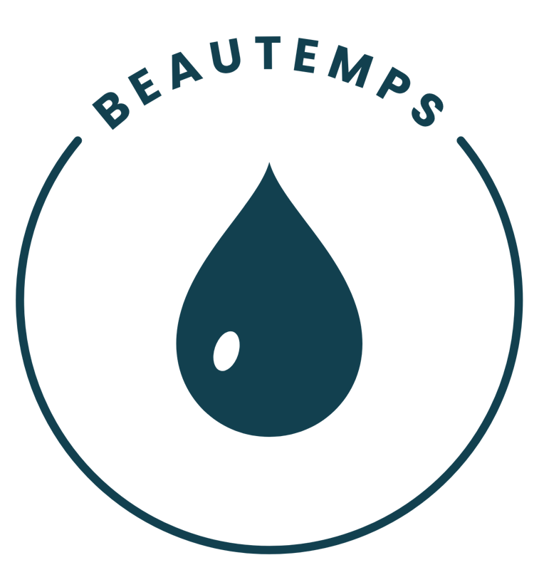
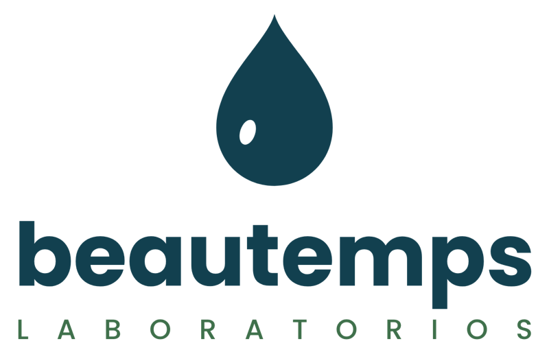
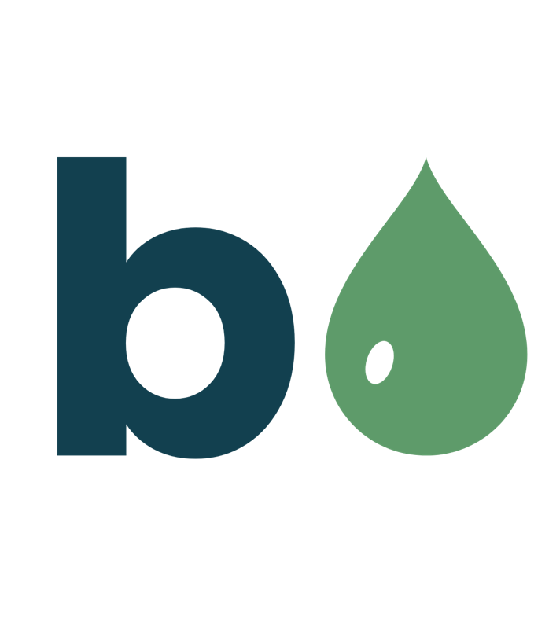
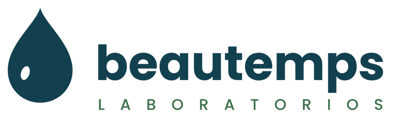
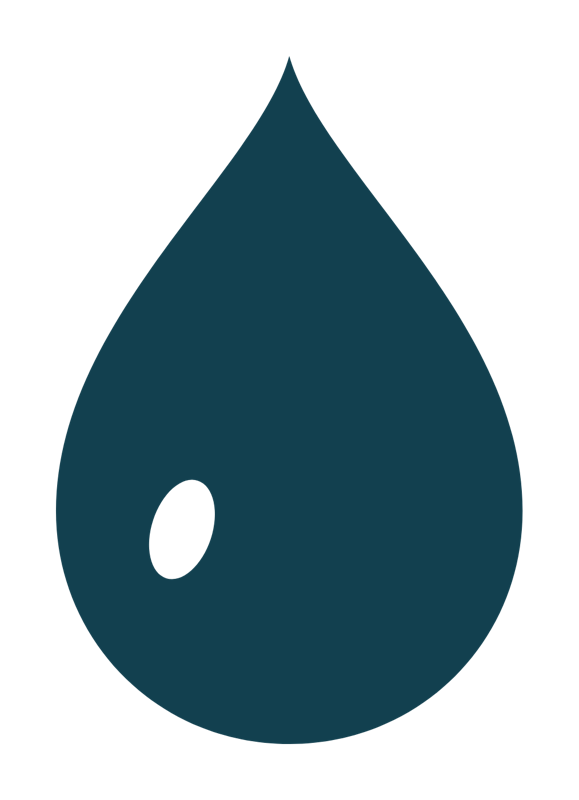
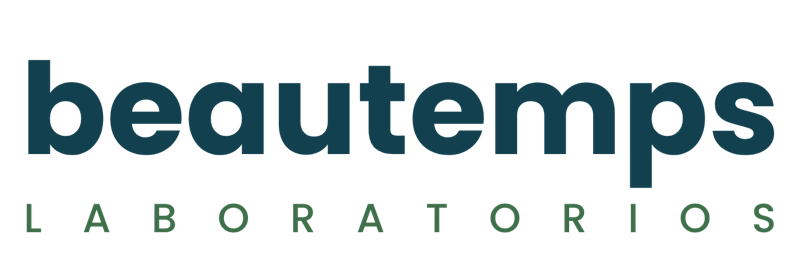
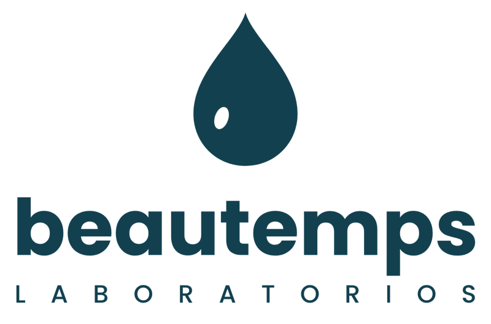
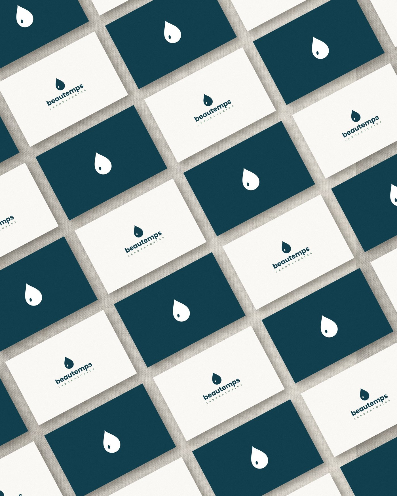
Capítulo 03
Cómo se ve y cómo habla la marca.
3.1 · Dirección de imagen
Las fotos le dan vida a todo. Combinan el mundo laboratorio con el origen vegetal, y siempre muestran algo verdadero de Beautemps. Las tarjetas describen cada tipo de foto a producir.
Macro de hojas, flores y raíces. Fondo limpio, luz natural, mucho detalle.
Hierbas secas y molidas sobre mesada clara, como insumo listo para procesar.
Maceración, filtrado, probetas y balanzas. Manos con guantes, encuadres cerrados.
La tintura a contraluz, en vidrio. Su color ámbar real es el protagonista.
La directora técnica y el equipo trabajando. Le pone cara a la confianza.
Lotes, rótulos, depósito y despacho. Muestra que se trabaja por cantidad.
3.2 · El nuevo Instagram
El Instagram pasa de catálogo a vidriera del conocimiento de Beautemps. En lugar de anunciar "Tinturas madre", explica qué es una tintura madre, de dónde sale y por qué confiar en quien la elabora.
La primera fila queda fija: quién es el laboratorio (trayectoria, qué hace y ANMAT). Debajo, las publicaciones de las primeras semanas, de la más nueva a la más vieja. El proceso se cuenta en partes, empezando por la selección, y entre paso y paso se intercalan plantas y temas para clientes. Las fotos son de referencia hasta tener las propias del laboratorio.
Primer laboratorio habilitado por ANMAT para IFA vegetales. Tinturas madre y extractos para la industria.
De la planta, a la esencia.
Primer laboratorio habilitado por ANMAT para IFA vegetales. Tinturas madre y extractos para la industria.
De la planta, a la esencia.
01
Definición, usos y diferencias con extractos fluidos y glicólicos.
02
De la planta a la esencia, paso a paso, en el laboratorio.
03
Cada planta: nombre científico, parte usada, propiedades y qué se extrae.
04
Habilitación ANMAT, trayectoria, trazabilidad y dirección técnica.
05
Industrias, compras por cantidad, desarrollos a medida, cotizaciones.
06
El equipo, la historia y el día a día del laboratorio.
Deslizá para ver las 6 placas. Los pasos son generales y hay que validarlos con la dirección técnica.
Se identifica cada especie y se controla su origen y calidad antes de entrar al laboratorio.
La planta, fresca o seca, se limpia y se fragmenta para liberar sus componentes.
Reposa en una solución hidroalcohólica durante un tiempo controlado. Ahí se extrae la esencia.
Se prensa, se filtra y se analiza cada lote para garantizar calidad farmacéutica.
Envasada a granel y con trazabilidad por lote. Pedí tu cotización.
Calendula officinalis
Una placa por planta: nombre, parte usada, propiedades y qué se extrae. Con foto real en las placas siguientes.
años elaborando extractos vegetales.
Un dato fuerte como protagonista, en tipografía gigante. Para portadas y fechas clave.
Te proveemos el insumo vegetal, por cantidad y con trazabilidad.
Le habla directo al cliente B2B y lo lleva a cotizar.
Capítulo 04
El mercado, los tiempos y lo que hay que aprobar.
4.1 · Competencia
Calidad, trazabilidad y experiencia son promesas de todo el rubro. Lo que solo Beautemps puede decir es su pionerismo regulatorio y su especialización en tinturas madre.
| Laboratorio | Qué ofrece | Cómo se presenta | Lo que lo distingue |
|---|---|---|---|
| Laboratorio Basel Lanús | Extractos botánicos, ingredientes fitoquímicos y producto terminado | Tono internacional y sustentable | 35+ años, exporta a 15+ países |
| Proyar Córdoba | Extractos glicólicos, hidroglicéricos y secos | Catálogo técnico, foco cosmética | 20+ años, ISO 9001:2015 |
| Vasana Villa Martelli | Extractos para cosmética (Extraplant) y perfumería | Empresa de fragancias con línea de extractos | Desde 1971 |
| Droguería Argentina Lanús | Tinturas madre en frasco de 60 ml | Venta al público | Producto final: más cliente que competidor |
Referente internacional
Su lema "Science is our Nature" resume el equilibrio que buscamos: ciencia y naturaleza en la misma frase.
Referente internacional
Usa su historia familiar como relato, no como estética antigua. Tiene filial en Argentina.
Cómo nos diferenciamos
4.2 · Cronograma
Una propuesta por etapas, para ajustar juntos. El rediseño del sistema interno va por un camino aparte.
4.3 · Para aprobar
Próximo paso
Con el camino elegido cerramos el manual completo y pasamos a la web, el Instagram y las etiquetas.